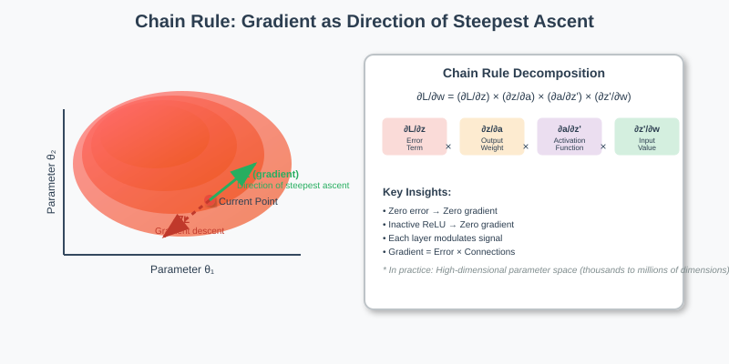
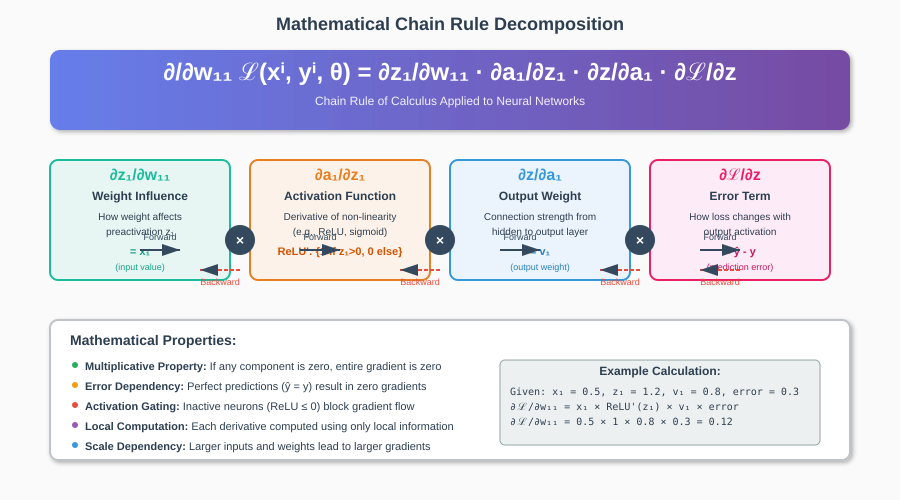
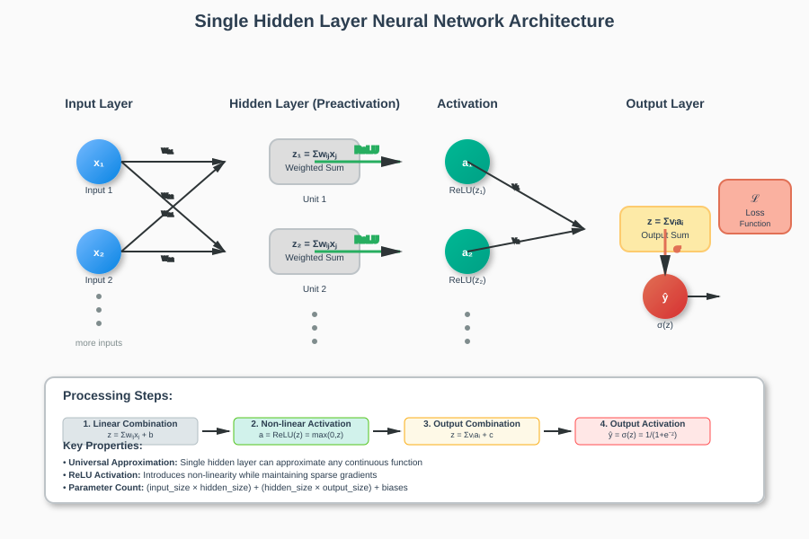
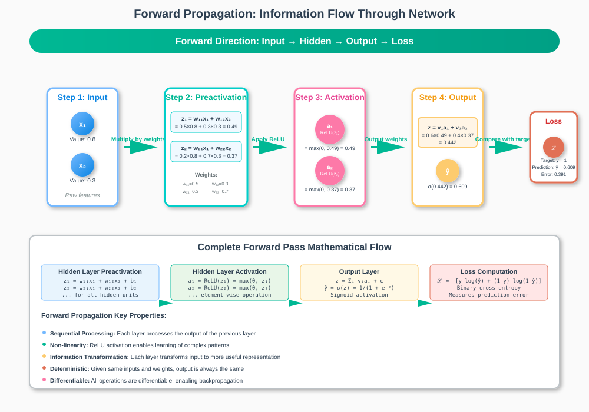
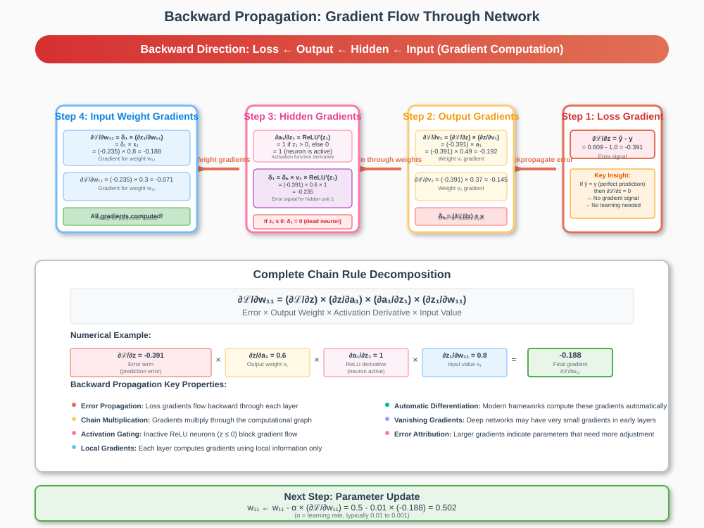

Chain Rule for Single Layer Neural Networks
📋 Quick Navigation
- 🎯 Overview
- 🧮 Mathematical Foundation
- 🏗️ Network Architecture
- ➡️ Forward Propagation
- ⬅️ Backward Propagation
- ⚡ Gradient Computation
- 💡 Key Insights
- 🔬 Practical Implementation
- 📚 References & Further Reading
🎯 Overview
The Chain Rule is fundamental to understanding how neural networks learn through backpropagation. In the context of single-layer neural networks, it provides the mathematical framework for computing partial derivatives that guide parameter updates during training.

Core Concepts
- Gradient Computation: Understanding how small parameter changes affect the loss function
- Geometric Interpretation: Visualizing gradients as directions in high-dimensional parameter space
- Signal Propagation: Tracing how information flows forward and backward through the network
The gradient tells us in which direction the loss function increases. By moving in the negative gradient direction, we perform gradient descent to minimize the loss.
🧮 Mathematical Foundation
Chain Rule Formula
The chain rule for computing the partial derivative of the loss function with respect to a weight parameter is expressed as:
∂/∂w₁₁ ℒ(xⁱ, yⁱ, θ) = ∂z₁/∂w₁₁ · ∂a₁/∂z₁ · ∂z/∂a₁ · ∂ℒ/∂z

Components Breakdown
| Component | Description | Interpretation |
|---|---|---|
∂z₁/∂w₁₁ |
Weight influence on preactivation | How weight affects linear combination |
∂a₁/∂z₁ |
Activation function derivative | Non-linearity contribution |
∂z/∂a₁ |
Hidden-to-output weight | Connection strength to output |
∂ℒ/∂z |
Loss derivative (error term) | How output affects final loss |
Key Mathematical Properties
- Error Dependency: If there's no prediction error, the derivative is zero
- Activation Dependency: Inactive neurons (ReLU = 0) don't contribute to gradients
- Chain Multiplication: Each layer's contribution multiplies through the chain
🏗️ Network Architecture
Single Hidden Layer Structure
A single-layer neural network with one hidden layer can be decomposed into distinct processing steps:

Layer Components
- Input Layer (
x₁, x₂, ..., xₙ) - Raw input features
-
Fed into weighted connections
-
Hidden Layer Processing
- Preactivation (
z₁, z₂, ..., zₘ): Linear weighted sum -
Activation (
a₁, a₂, ..., aₘ): Non-linear transformation (e.g., ReLU) -
Output Layer
- Output Preactivation (
z): Weighted sum of hidden activations - Final Activation: Often sigmoid for binary classification
- Loss Function (
ℒ): Measures prediction error
Processing Steps
Input → Weighted Sum → Activation → Weighted Sum → Output Activation → Loss
x → z → a → z → ŷ → ℒ
➡️ Forward Propagation
Information Flow
Forward propagation traces how input information transforms through each layer to produce the final output and loss.

Step-by-Step Process
-
Input Processing
Input features (x₁, x₂) are weighted by connection weights (w₁₁, w₁₂, w₁₄) -
Hidden Layer Preactivation
z₁ = w₁₁·x₁ + w₁₂·x₂ z₂ = w₂₁·x₁ + w₂₂·x₂ -
Hidden Layer Activation
a₁ = ReLU(z₁) = max(0, z₁) a₂ = ReLU(z₂) = max(0, z₂) -
Output Layer Processing
z = v₁·a₁ + v₂·a₂ ŷ = σ(z) = 1/(1 + e⁻ᶻ) -
Loss Computation
ℒ = -[y·log(ŷ) + (1-y)·log(1-ŷ)]
ReLU Activation Properties
- Active Region: When
z > 0, gradient flows normally - Inactive Region: When
z ≤ 0, gradient is zero (dead neurons) - Impact on Learning: Only active neurons contribute to parameter updates
⬅️ Backward Propagation
Gradient Flow Reversal
Backward propagation reverses the forward flow to compute how the loss function is influenced by each parameter.

Backtracking Process
- Loss to Output:
∂ℒ/∂z(error term) - Output to Hidden:
∂z/∂aᵢ(output weights) - Activation to Preactivation:
∂aᵢ/∂zᵢ(activation derivatives) - Preactivation to Weights:
∂zᵢ/∂wᵢⱼ(input values)
Error Term Significance
If prediction is perfect (ŷ = y), then ∂ℒ/∂z = 0
→ No gradient signal
→ No parameter updates needed
Gradient Components
The gradient for any weight always combines: - Error Signal: How much the prediction differs from target - Subsequent Weights: Connection strengths to output - Activation Derivatives: Non-linearity effects - Input Values: Feature magnitudes
⚡ Gradient Computation
Practical Calculation
For a weight wᵢⱼ connecting input xⱼ to hidden unit i:
∂ℒ/∂wᵢⱼ = (∂ℒ/∂z) × (∂z/∂aᵢ) × (∂aᵢ/∂zᵢ) × (∂zᵢ/∂wᵢⱼ)
= error × vᵢ × ReLU'(zᵢ) × xⱼ
ReLU Derivative Impact
def relu_derivative(z):
return 1.0 if z > 0 else 0.0
- Active neurons (
z > 0): Full gradient propagation - Inactive neurons (
z ≤ 0): Zero gradient (no learning)
Gradient Magnitude Factors
| Factor | Effect | Explanation |
|---|---|---|
| Error Size | Proportional | Larger errors → larger updates |
| Input Magnitude | Proportional | Larger inputs → larger gradients |
| Output Weight | Proportional | Stronger connections → more influence |
| Activation State | Binary | Inactive neurons block gradients |
💡 Key Insights
Fundamental Principles
- Gradient Direction: Points toward steepest loss increase
- Optimization Path: Move opposite to gradient (gradient descent)
- Error Attribution: Gradients assign blame to parameters
- Activation Gating: ReLU creates sparse gradient flow
Geometric Interpretation
Think of the parameter space as a high-dimensional mountain range: - Loss Function: Altitude at each point - Gradient: Slope direction (uphill) - Learning: Walking downhill to find valleys (minima)
Critical Observations
- Zero Error = Zero Learning: Perfect predictions require no updates
- Inactive Neurons: Don't contribute to gradients or learning
- Chain Multiplication: Each layer modulates the gradient signal
- Local Information: Each weight only sees local gradient information
🔬 Practical Implementation
Google Colab Integration

PyTorch Implementation Example
import torch
import torch.nn as nn
class SingleLayerNet(nn.Module):
def __init__(self, input_size, hidden_size, output_size):
super().__init__()
self.hidden = nn.Linear(input_size, hidden_size)
self.relu = nn.ReLU()
self.output = nn.Linear(hidden_size, output_size)
self.sigmoid = nn.Sigmoid()
def forward(self, x):
# Forward propagation with intermediate storage
z1 = self.hidden(x) # Preactivation
a1 = self.relu(z1) # Activation
z2 = self.output(a1) # Output preactivation
y_pred = self.sigmoid(z2) # Final output
return y_pred
# Gradient computation is handled automatically by PyTorch
model = SingleLayerNet(input_size=2, hidden_size=4, output_size=1)
criterion = nn.BCELoss()
optimizer = torch.optim.SGD(model.parameters(), lr=0.01)
Manual Gradient Computation
def manual_backward_pass(x, y_true, y_pred, weights, activations):
"""
Manually compute gradients using chain rule
"""
# Error term (∂ℒ/∂z)
error = y_pred - y_true
# Gradients for output weights
dW_output = error * activations['hidden']
# Gradients for hidden weights
delta_hidden = error * weights['output'] * relu_derivative(activations['preactivation'])
dW_hidden = delta_hidden.unsqueeze(-1) * x.unsqueeze(0)
return {'output': dW_output, 'hidden': dW_hidden}
Hugging Face Models
For production-ready implementations, explore these models: - BERT Base - Transformer architecture - GPT-2 - Generative language model - ResNet - Computer vision backbone
📚 References & Further Reading
📖 Essential Papers
- Backpropagation Applied to Handwritten Zip Code Recognition - LeCun et al.
-
Foundational paper on backpropagation applications
-
Deep Learning - Bengio, Courville & Goodfellow
-
Comprehensive overview of neural network training
-
Understanding the Difficulty of Training Deep Feedforward Neural Networks - Glorot & Bengio
- Weight initialization and gradient flow analysis
🔧 Implementation Resources
- PyTorch Autograd Tutorial
-
Automatic differentiation in practice
-
Stanford's comprehensive deep learning course
-
Deep Learning Specialization - Andrew Ng
- Practical neural network implementation
📊 Advanced Topics
- Gradient Descent Optimization Algorithms - Ruder
-
Modern optimization techniques beyond basic SGD
-
The Matrix Calculus You Need For Deep Learning - Parr & Howard
- Mathematical foundations for gradient computation
Documentation created for MkDocs Material theme. For questions or contributions, please refer to the project repository.